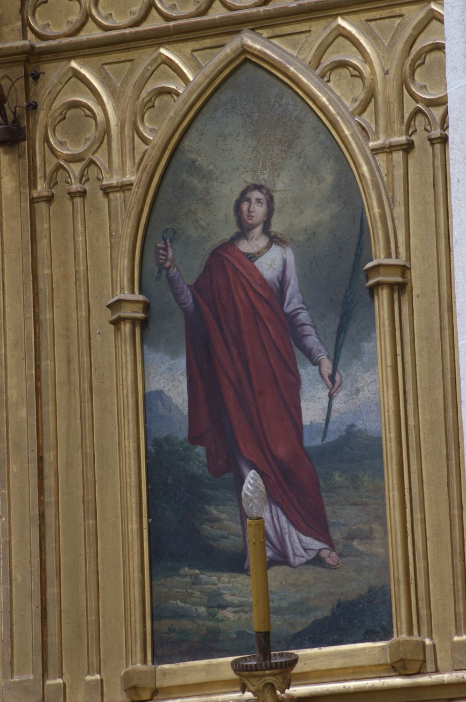

Santa Apol·lònia (s. III) va ser una verge i màrtir. Durant una revolta a Alexandria contra els cristians, va ser detinguda, torturada i finalment cremada a la foguera.
En aquesta pintura, Agustí Buades i Muntaner (s. XIX) la representa sostenint amb una mà les tenalles amb les que la torturaren trencant-li les dents. Amb l’altra mà sosté una palma, la qual, juntament amb la túnica blanca i el mantó vermell, la identifica com a màrtir: la túnica blanca i la palma fan referència al passatge de l’Apocalipsi que parla de la multitud dels redimits que portaran vestits blancs i palmes a les mans, mentre que el color vermell simbolitza la sang vessada per la fe.